Kit Sólidos Geométricos
Ensine Sólidos Geométricos de forma visual, prática e fácil de entender
Com esse kit, sua explicação deixa de ficar só no quadro e vira uma atividade mais visual e participativa.
- Atividade completa pronta para o caderno
- Arquivo em PDF para imprimir quantas vezes quiser
- Entrega no WhatsApp e e-mail após a compra
O que as crianças vão aprender com a atividade
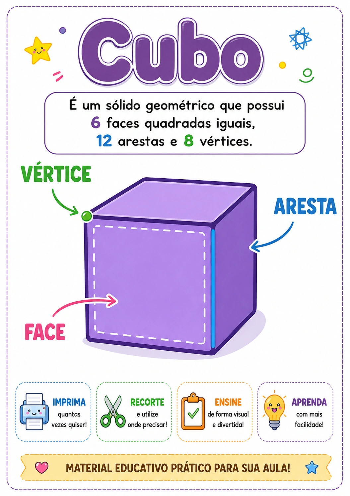
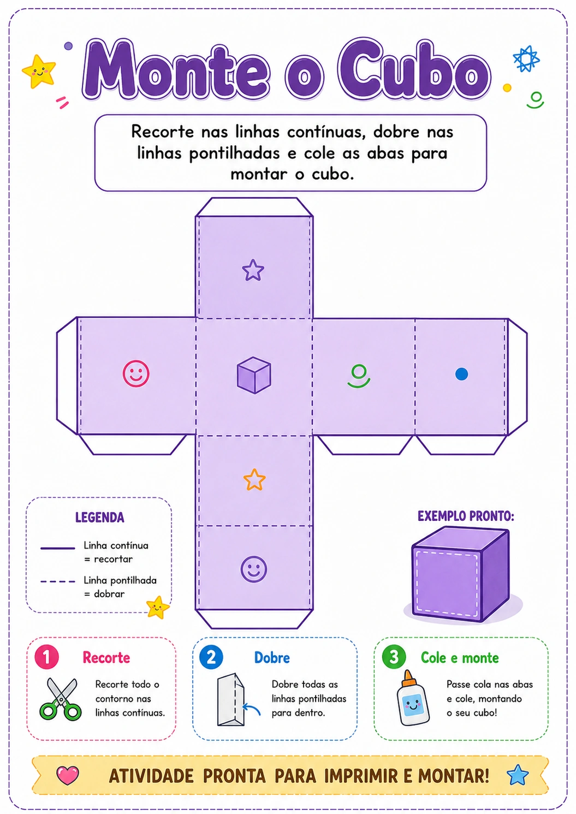
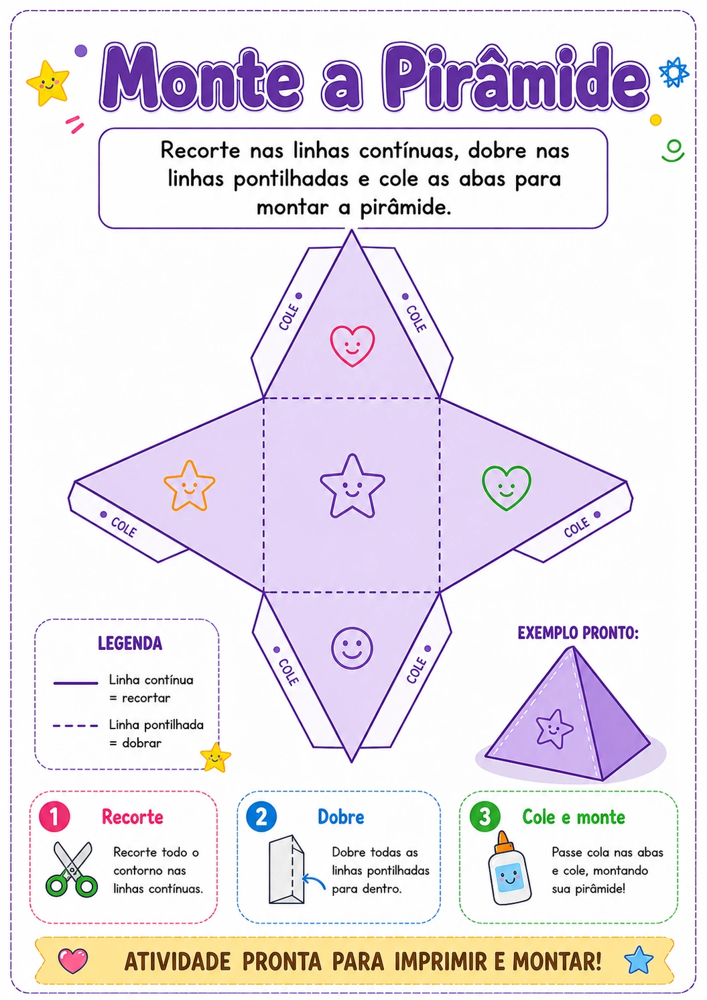
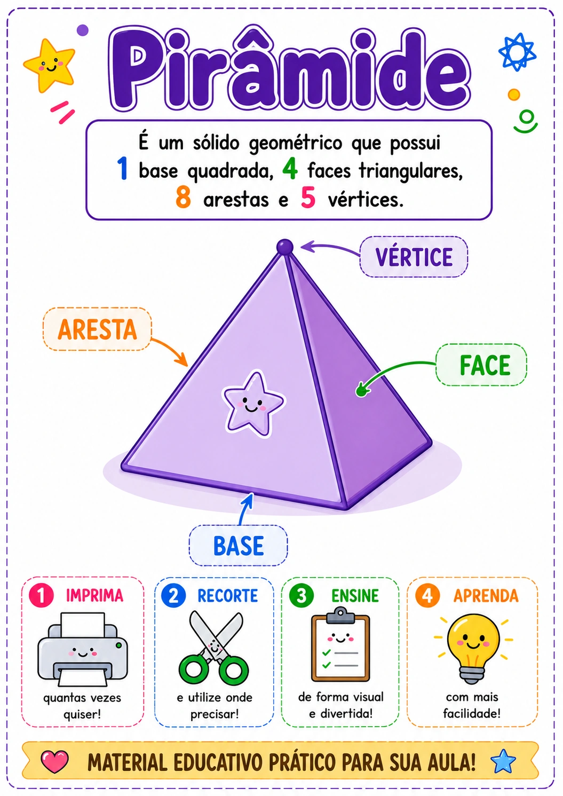
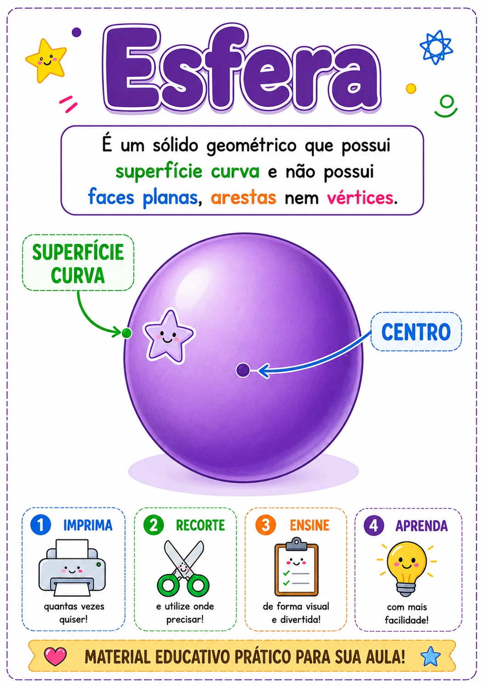
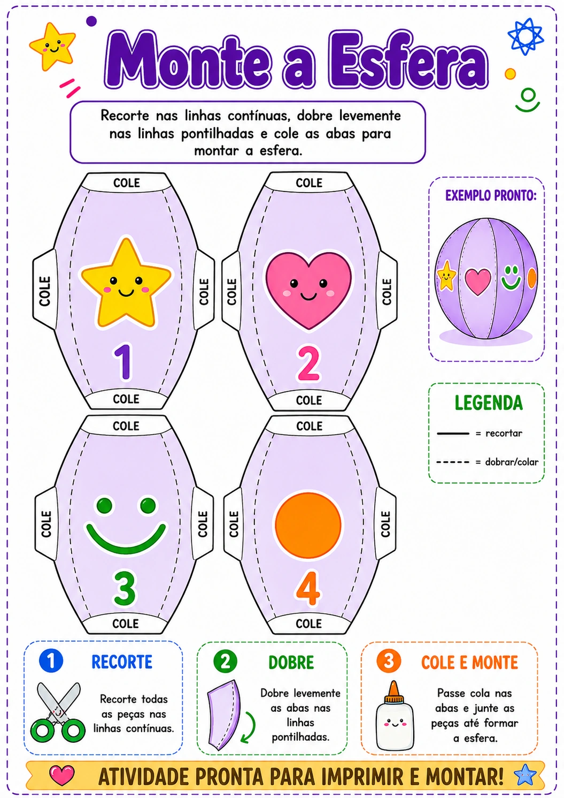
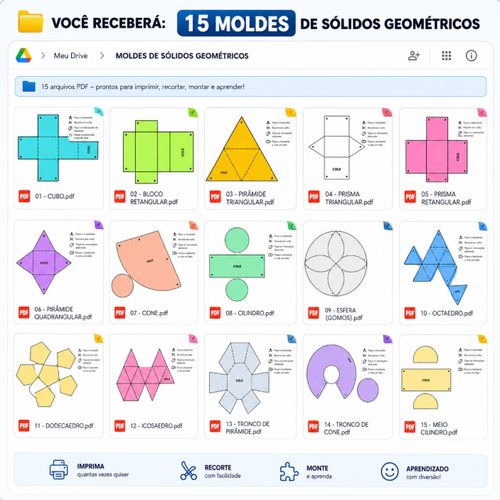
- Reconhecer os principais sólidos geométricos
- Visualizar melhor cada forma
- Entender faces, vértices e arestas de maneira mais concreta
- Montar os sólidos com as próprias mãos
- Fixar o conteúdo com uma atividade pronta para o caderno
Veja como o material transforma a sala de aula ⭐
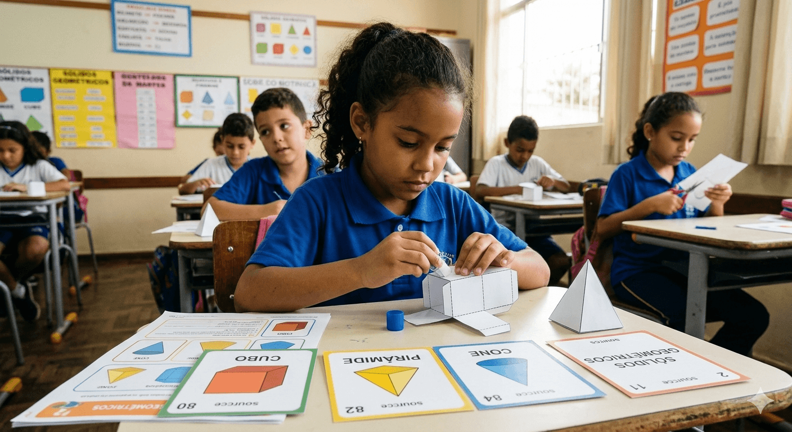
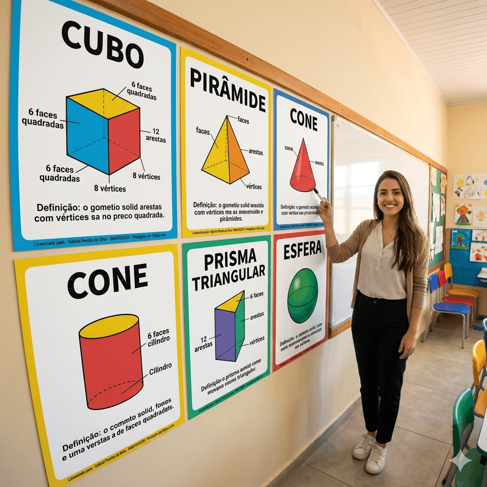
Esse material é ideal para você que:
- Vai trabalhar sólidos geométricos com a turma
- Quer uma aula mais prática, visual e participativa
- Precisa de um material pronto para imprimir
- Não quer perder tempo criando atividade do zero
- Quer ajudar os alunos a entenderem melhor o conteúdo
✏️ Passo a passo
Como usarna aula🎒
- 1Apresente os cartazes para explicar cada sólido geométrico
- 2Monte os modelos com os alunos para deixar a aula mais prática
- 3Use a atividade no caderno para fixar o conteúdo
- 4Reaproveite o PDF sempre que trabalhar esse tema novamente
O que vem noKit de Sólidos Geométricos
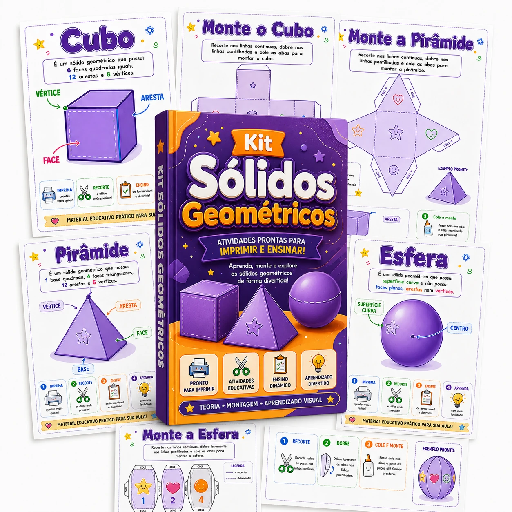
- 7 cartazes em A4 com explicações visuais
Para apresentar os sólidos geométricos de forma clara durante a aula. - 5 modelos de sólidos geométricos para montar
Para os alunos recortarem, dobrarem e montarem com as próprias mãos. - Atividade completa para o caderno
Para ajudar na fixação do conteúdo depois da explicação. - Arquivo em PDF
Você pode salvar e imprimir quantas vezes quiser. - Entrega no WhatsApp e e-mail
Após a compra, você recebe o acesso ao material digital.
👇 Garanta o seu agora
Oferta Básica
Kit Sólidos Geométricos
Material em PDF pronto para imprimir e usar com a turma.
- 7 cartazes em A4 com explicações visuais
- 5 modelos de sólidos para montar
- Atividade completa pronta para o caderno
- Arquivo em PDF para imprimir quantas vezes quiser
- Entrega no WhatsApp e e-mail após a compra
De R$29 por
R$10
Pagamento único à vista
🔒 Compra segura • Acesso imediato
🔥 Mais Vendido
✨ Super Oferta
Kit Sólidos + 90 atividades extras para o ano todo!
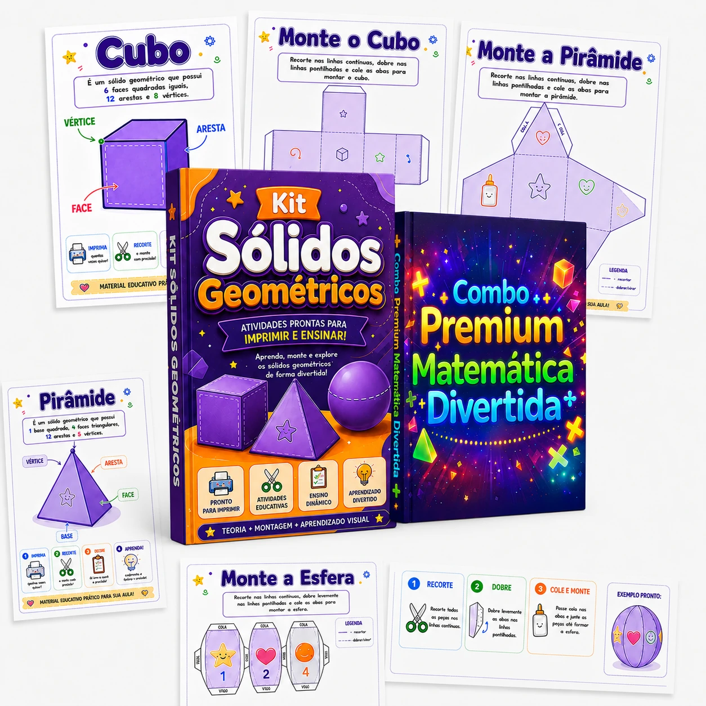
- ✅Tudo do Kit Sólidos Geométricos
- ⭐90 atividades dinâmicas (3º ao 5º)
- 🎮Jogo da Velha das 4 Operações
- 🎯Bingo da Multiplicação
- 🔢Numerais com Material Dourado
- 📖Explicação de todas as dinâmicas
- 📁PDF para imprimir quantas vezes quiser
- 🏫Ideal para sala de aula e reforço
De R$49,90 por
R$27
à vista
🔒 Acesso imediato • Compra 100% segura
Após a compra, você recebe acesso ao Material em PDF diretamente no seu WhatsApp e E-MAIL
Dúvidas Frequentes
Deixe sua aula de Sólidos Geométricos mais visual e prática
Receba o material pronto em PDF, imprima e use com seus alunos.
Precisa de Ajuda?
Envie um e-mail para esterterapeuta@gmail.com e nossa equipe responderá rapidamente para ajudá-lo com qualquer dúvida ou problema.